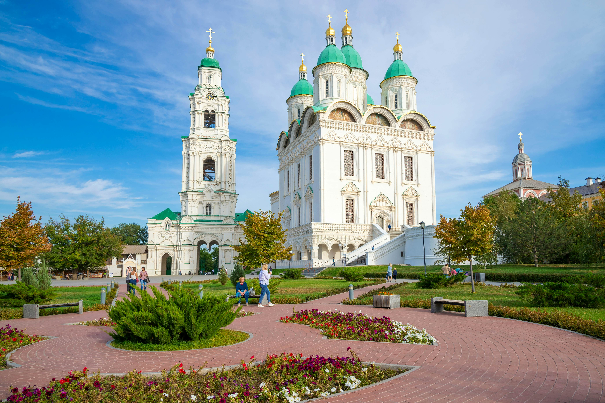

Astrakhan kremlin
ตั้งอยู่บนเกาะสูงระหว่างแม่น้ำโวลก้าและแม่น้ำกูตูม มักเปิดให้บริการทุกวัน แต่พิพิธภัณฑ์ภายในอาจปิดในวันจันทร์หรือวันหยุดนักขัตฤกษ์ ควรตรวจสอบอีกครั้ง สามารถเดินเท้าจากใจกลางเมือง หรือใช้ระบบขนส่งสาธารณะ เช่น รถประจำทางหรือแท็กซี่ มาลงที่บริเวณใกล้เคียง